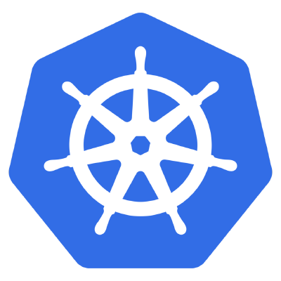
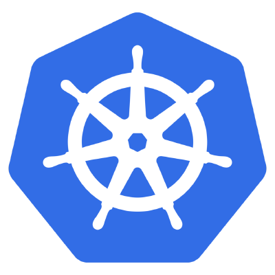

References
Resources
Micro Services 1
Micro Services 2
Micro Services 3
Micro Services Video
 Docker Introduction
Docker Registery
Docker Hub
Docker Video

Kubernetes Introduction
Kubernetes Video
Kubernetes AWS Implementation
Kubernetes Local Implementation
Kubernetes GCP Implementation
Docker Introduction
Docker Registery
Docker Hub
Docker Video

Kubernetes Introduction
Kubernetes Video
Kubernetes AWS Implementation
Kubernetes Local Implementation
Kubernetes GCP Implementation